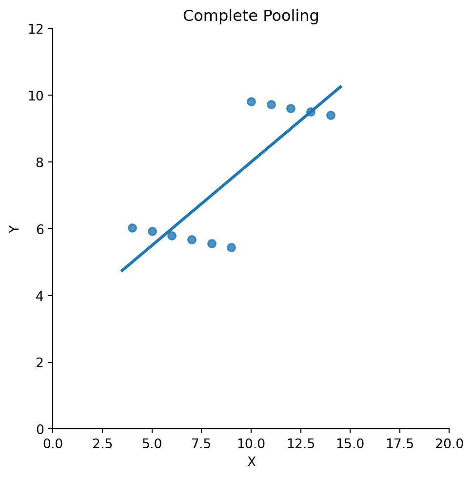
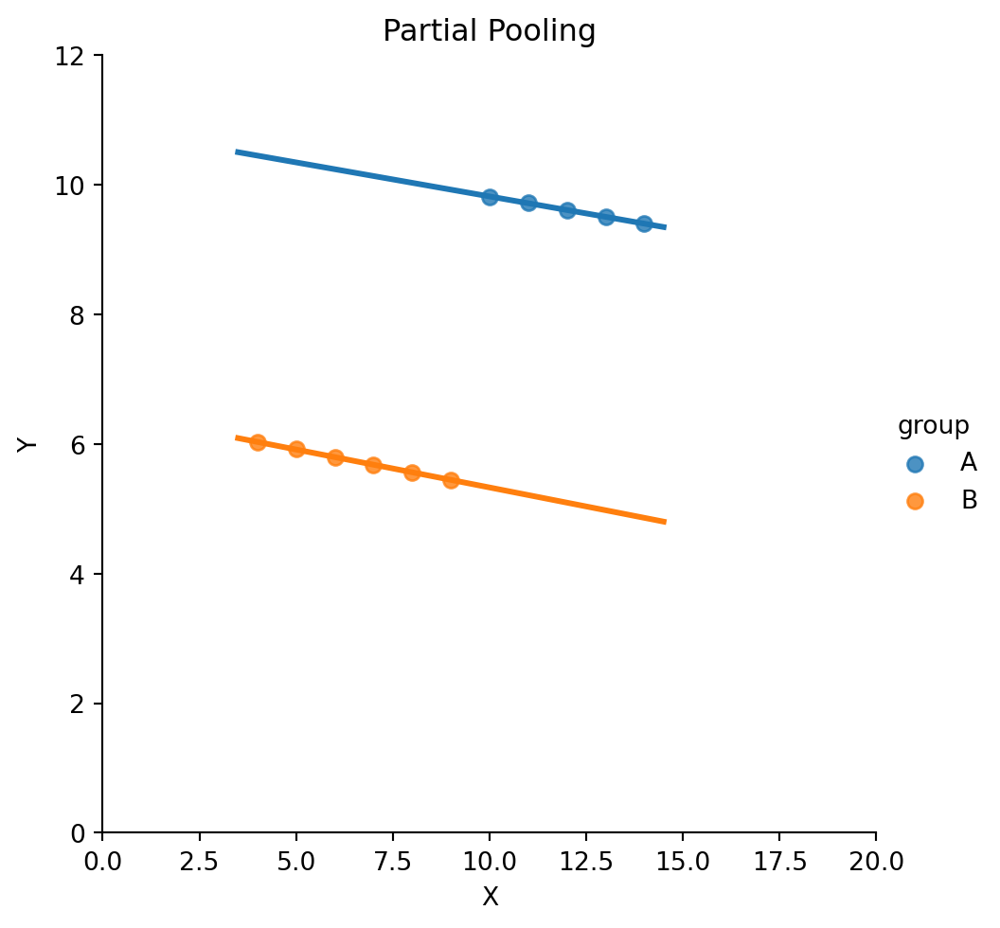
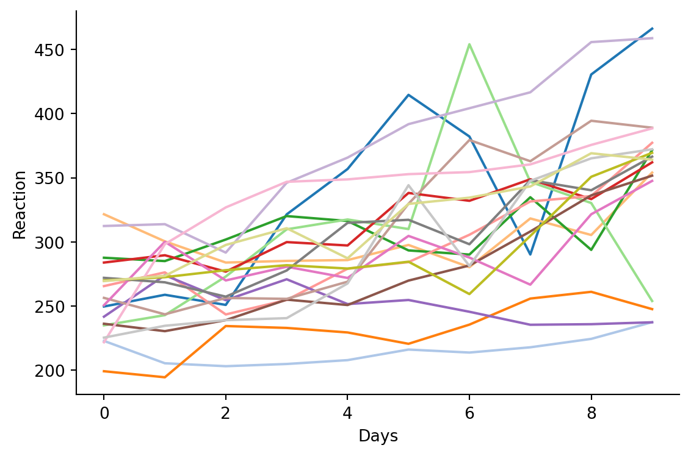
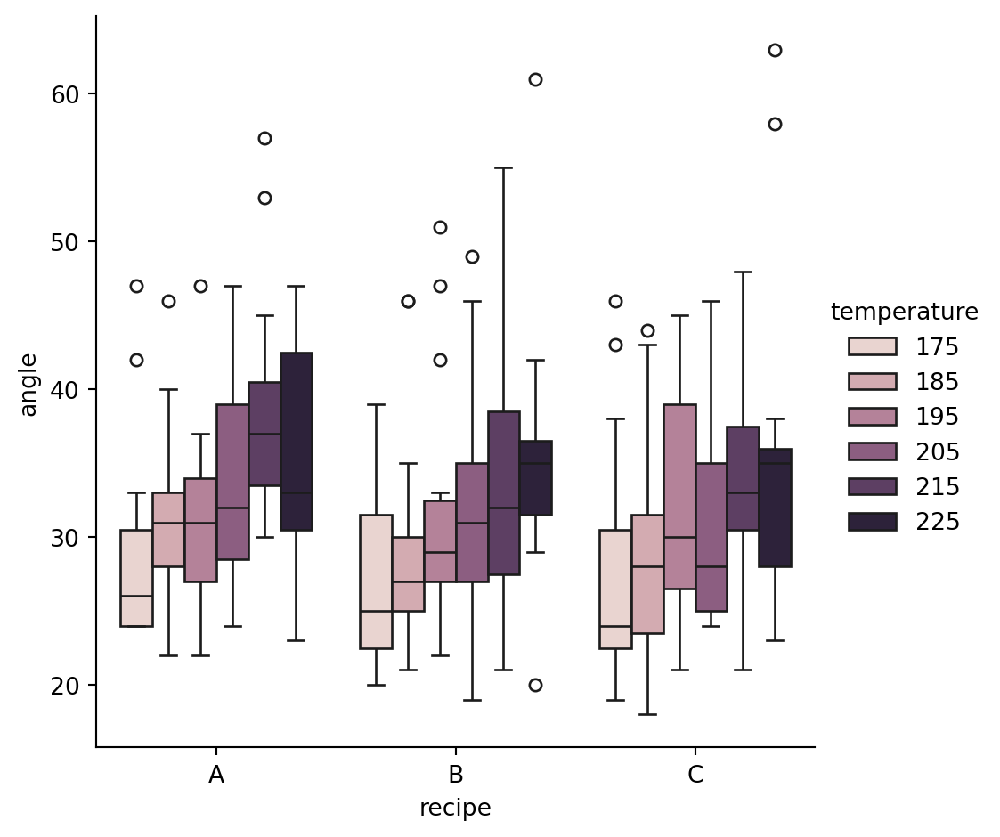

Code
# Import what we need
import polars as pl
from polars import col
import seaborn as sns
import numpy as np
from bossanova import model, compare, load_datasetSite Updates: Week 10 Slides
Eshin Jolly
March 10, 2026
Over the past few notebooks we’ve built a solid GLM toolkit:
.infer(how='asym|boot|perm').explore()family='binomial'Thus far, every model we’ve fit so far has assumed that each observation is independent — knowing one data point tells you nothing about another and therefore errors are independent & identitically distributed (iid) .
But that assumption breaks down all the time in real data:
When observations share a cluster they tend to be more similar to each other than to observations from other clusters. Ignoring this leads to overconfident estimates — your standard errors are too small and your p-values too optimistic.
The fix? Mixed models: they’re just another extension of the GLM you already know. Same model() function, same .explore() mixing board, same compare() for model comparison. We just add a new ingredient to the formula.
Before we get to the mechanics, let’s see why ignoring data structure can go badly wrong.
Here’s a simple dataset with 10 observations. There’s a variable x1235 and an outcome y. There’s also a column group which reflects which group repeated observations came from.
First, let’s fit a simple regression ignoring group:
| x1235 | y1 | y2 | y3 | y5 | x4 | y4 | group |
|---|---|---|---|---|---|---|---|
| f64 | f64 | f64 | f64 | f64 | f64 | f64 | str |
| 10.0 | 8.04 | 9.14 | 7.46 | 9.82 | 8.0 | 6.58 | "A" |
| 8.0 | 6.95 | 8.14 | 6.77 | 5.56 | 8.0 | 5.76 | "B" |
| 13.0 | 7.58 | 8.74 | 12.74 | 9.51 | 8.0 | 7.71 | "A" |
| 9.0 | 8.81 | 8.77 | 7.11 | 5.45 | 8.0 | 8.84 | "B" |
| 11.0 | 8.33 | 9.26 | 7.81 | 9.72 | 8.0 | 8.47 | "A" |
We can do this visually first using seaborn

Notice how the regression slope is positive but the trend within each cluster is clearly negative
Lets estimate a model to confirm:
Tip: you can always chain the .summary() method to .fit(), .infer(), and .explore() to print an R style summary if you prefer that to polars dataframes accessible via .params and .effects
Linear Model: y5 ~ x1235
Residuals:
Min 1Q Median 3Q Max
-2.050 -0.710 0.011 0.820 1.820
Coefficients:
Estimate
Intercept 3.002
x1235 0.500
Residual std error: 1.236 on 9 df
Multiple R-squared: 0.666, Adjusted R-squared: 0.629
AIC: 37.7, BIC: 38.5Look at Coefficients: in the output above. Notice how the estimate for x1235 is positive?
Now we if we stratify data by the group column and re-plot/model we can see this trend reverse:

Linear Mixed Model fit by REML: y5 ~ x1235 + (1 | group)
Number of obs: 11, groups: group, 2
REML criterion at convergence: -36.436
Scaled residuals:
Min 1Q Median 3Q Max
-1.540 -0.570 -0.176 0.835 1.188
Varying effects:
Groups Name Variance Std.Dev. Corr
group Intercept 10.040 3.169
Residual 0.000 0.011
ICC: 1.000
Fixed effects:
Estimate
Intercept 8.719
x1235 -0.113
AIC: -30.4, BIC: -29.2Look at the Fixed effects towards to bottom (same as .params):
By x1235 now has a negative estimate — the opposite of what the pooled regression told us!
This is Simpson’s Paradox: the overall trend reverses when you account for groups.
The problem is that participants differ in their baseline levels of both x and y. When we pool everyone together, those between-person differences create a spurious positive trend. This is exactly what happens when you violate the independence assumption — you confuse between-cluster variation with within-cluster effects.
Let’s work through a classic dataset to see how different approaches handle clustering. The sleep deprivation study (Belenky et al., 2003) measured reaction times for 18 participants over 10 days of sleep deprivation:
| Variable | Description |
|---|---|
| Subject | Participant ID |
| Days | Days of sleep deprivation (0–9) |
| Reaction | Average reaction time (ms) |
The question: How does sleep deprivation affect reaction time?
| Subject | Days | Reaction |
|---|---|---|
| i64 | i64 | f64 |
| 308 | 0 | 249.56 |
| 308 | 1 | 258.7047 |
| 308 | 2 | 250.8006 |
| 308 | 3 | 321.4398 |
| 308 | 4 | 356.8519 |

Notice two things:
Let’s review the three approaches for dealing with dependent data we discussed in lecture:
Ignore the grouping entirely — fit one regression line through all 180 observations:
\[ Reaction_i = \beta_0 + \beta_1 \cdot Days_i + \epsilon_i \]
This is what we’ve been doing in every model so far. It assumes all observations are independent.
| term | estimate |
|---|---|
| str | f64 |
| "Intercept" | 251.4 |
| "Days" | 10.47 |
The model says reaction time increases by ~10.5 ms per day. But this estimate pretends all 180 data points are independent — it doesn’t know that groups of 10 come from the same person. The standard errors will be too small.
Fit a separate regression for each participant — 18 independent models:
# Fit a separate model per subject
no_pool_results = []
# Loop over unique subjects
for subj in sleep.select("Subject").unique().sort("Subject").to_series():
# Get just their data points
subj_data = sleep.filter(pl.col("Subject") == subj)
# Fit a model
m = model("Reaction ~ Days", subj_data).fit()
# Save estimates
no_pool_results.append({
"Subject": subj,
"Intercept": m.params["estimate"][0],
"Slope": m.params["estimate"][1],
})
no_pool = pl.DataFrame(no_pool_results)
no_pool| Subject | Intercept | Slope |
|---|---|---|
| i64 | f64 | f64 |
| 308 | 244.2 | 21.76 |
| 309 | 205.1 | 2.262 |
| 310 | 203.5 | 6.115 |
| 330 | 289.7 | 3.008 |
| 331 | 285.7 | 5.266 |
| … | … | … |
| 352 | 276.4 | 13.57 |
| 369 | 255.0 | 11.35 |
| 370 | 210.4 | 18.06 |
| 371 | 253.6 | 9.188 |
| 372 | 267.0 | 11.3 |
Now each person gets their own intercept and slope. But this approach has problems too:
The sweet spot. A mixed model estimates one population-level trend while allowing each participant to deviate from it:
\[ Reaction_{ij} = (\beta_0 + u_{0j}) + (\beta_1 + u_{1j}) \cdot Days_{ij} + \epsilon_{ij} \]
This is called partial pooling because each person’s estimate is pulled (“shrunk”) toward the population average. People with noisy data get pulled more; people with clear patterns keep their individuality.
In bossanova and lme4 in R, varying effects term use the followin formula syntax:
| Formula part | Meaning |
|---|---|
(1 \| Subject) |
Random intercept only per Subject |
(0 + Days \| Subject) |
Random slope only per Subject |
(1 \| Subject) + (0 + Days \| Subject) |
Random intercept + slope per Subject |
(Days \| Subject) |
Random intercept + slope + correlation per Subject |
Let’s start with random intercepts — each person can have a different baseline reaction time, but the effect of sleep deprivation is the same for everyone:
| term | estimate |
|---|---|
| str | f64 |
| "Intercept" | 251.4 |
| "Days" | 10.47 |
Linear Mixed Model fit by REML: Reaction ~ Days + (1 | Subject)
Number of obs: 180, groups: Subject, 18
REML criterion at convergence: 1786.465
Scaled residuals:
Min 1Q Median 3Q Max
-3.226 -0.553 0.011 0.519 4.251
Varying effects:
Groups Name Variance Std.Dev. Corr
Subject Intercept 1378.179 37.124
Residual 960.457 30.991
ICC: 0.589
Fixed effects:
Estimate
Intercept 251.405
Days 10.467
AIC: 1792.5, BIC: 1802.0Let’s unpack the new parts of the output:
Fixed effects (.params) — same as before. The population-average intercept and slope:
Variance components (.varying_spread) — how much variability is there between subjects?
| term | metric | estimate |
|---|---|---|
| str | str | f64 |
| "Subject | Intercept" | "variance" | 1378.0 |
| "Subject | Intercept" | "std_dev" | 37.12 |
| "ICC" | "icc" | 0.5893 |
| "Residual" | "variance" | 960.5 |
| "Residual" | "std_dev" | 30.99 |
Subject | Intercept - variability around Subjects’ mean Reaction TimeICC — intraclass correlation: the proportion of total variance that’s between subjects. Here ~0.59, meaning almost 60% of the variability in reaction time is due to who the person is, not how many days they’ve been deprived. That’s a lot of clustering!Residual - error variance not accounted for by terms in the modelSubject-specific estimates (.varying_params) — also called the “best linear unbiased predictors” (BLUPs)
These are each subject’s intercept, after shrinkage toward the population mean. Notice how only the Intercept is different across participants beause we didn’t estimate a random slope. This is similar to the fixef(model) function in R:
| group | level | Intercept |
|---|---|---|
| str | str | f64 |
| "Subject" | "308" | 292.2 |
| "Subject" | "309" | 173.6 |
| "Subject" | "310" | 188.3 |
| "Subject" | "330" | 255.8 |
| "Subject" | "331" | 261.6 |
| … | … | … |
| "Subject" | "352" | 287.8 |
| "Subject" | "369" | 258.4 |
| "Subject" | "370" | 245.0 |
| "Subject" | "371" | 248.1 |
| "Subject" | "372" | 269.5 |
The .varying_offsets shows how much each person deviates from the population average (the varying effect itself). This the same as the ranef(model) function in R:
| group | level | Intercept |
|---|---|---|
| str | str | f64 |
| "Subject" | "308" | 40.78 |
| "Subject" | "309" | -77.85 |
| "Subject" | "310" | -63.11 |
| "Subject" | "330" | 4.406 |
| "Subject" | "331" | 10.22 |
| … | … | … |
| "Subject" | "352" | 36.38 |
| "Subject" | "369" | 7.036 |
| "Subject" | "370" | -6.363 |
| "Subject" | "371" | -3.294 |
| "Subject" | "372" | 18.12 |
Try estimating a model with intercepts, slopes, and their correlation using the formula refrence above. What do you see now in the model’s .varying_params?
We’ve seen how to fit mixed models — but how do you decide which varying effects to include? The recommended approach (Barr et al., 2013) is:
Start maximal, then simplify.
Begin with the most complex random effects structure your design can support. If it doesn’t converge (or produces warnings), simplify step by step — using convergence diagnostics and model comparison to guide you.
Let’s walk through this process with a new dataset.
The cake dataset records the breakage angle of 3 cake recipes (A, B, C), each baked at 6 temperatures (175°–225°), with 15 replicates:

Each replicate saw all 3 recipes at all 6 temperatures — so both recipe and temperature are within-replicate factors. The maximal model lets each replicate have its own intercept, recipe effects, temperature slope, and recipe × temperature interactions:
The model fit, but those warnings tell us something important. Singular fit means some variance components were estimated at (essentially) zero — the model is trying to estimate more random variation than the data can support.
Let’s look at the variance components to see which ones collapsed:
| term | metric | estimate |
|---|---|---|
| str | str | f64 |
| "replicate | Intercept" | "variance" | 194.9 |
| "replicate | Intercept" | "std_dev" | 13.96 |
| "replicate | recipe[B]" | "variance" | 341.6 |
| "replicate | recipe[B]" | "std_dev" | 18.48 |
| "replicate | recipe[C]" | "variance" | 252.2 |
| … | … | … |
| "temperature:recipe[C]:temperat… | "corr" | -0.7386 |
| "recipe[B]:temperature:recipe[C… | "corr" | 0.5957 |
| "ICC" | "icc" | 0.6923 |
| "Residual" | "variance" | 19.37 |
| "Residual" | "std_dev" | 4.401 |
The interaction slopes have near-zero variance — replicates don’t differ in their recipe × temperature interactions. Follow the hierarchy: drop interactions first, then slopes, then correlations:
| term | metric | estimate |
|---|---|---|
| str | str | f64 |
| "replicate | Intercept" | "variance" | 40.72 |
| "replicate | Intercept" | "std_dev" | 6.381 |
| "replicate | recipe[B]" | "variance" | 7.504 |
| "replicate | recipe[B]" | "std_dev" | 2.739 |
| "replicate | recipe[C]" | "variance" | 14.59 |
| … | … | … |
| "recipe[B]:temperature" | "corr" | 0.2054 |
| "recipe[C]:temperature" | "corr" | -0.07784 |
| "ICC" | "icc" | 0.6793 |
| "Residual" | "variance" | 20.14 |
| "Residual" | "std_dev" | 4.488 |
| term | metric | estimate |
|---|---|---|
| str | str | f64 |
| "replicate | Intercept" | "variance" | 26.89 |
| "replicate | Intercept" | "std_dev" | 5.185 |
| "replicate | recipe[B]" | "variance" | 7.103 |
| "replicate | recipe[B]" | "std_dev" | 2.665 |
| "replicate | recipe[C]" | "variance" | 14.33 |
| … | … | … |
| "Intercept:recipe[C]" | "corr" | 0.2989 |
| "recipe[B]:recipe[C]" | "corr" | 0.9905 |
| "ICC" | "icc" | 0.6684 |
| "Residual" | "variance" | 20.78 |
| "Residual" | "std_dev" | 4.558 |
| term | metric | estimate |
|---|---|---|
| str | str | f64 |
| "replicate | Intercept" | "variance" | 33.45 |
| "replicate | Intercept" | "std_dev" | 5.783 |
| "replicate | recipe[B]" | "variance" | 3.397 |
| "replicate | recipe[B]" | "std_dev" | 1.843 |
| "replicate | recipe[C]" | "variance" | 8.684 |
| "replicate | recipe[C]" | "std_dev" | 2.947 |
| "ICC" | "icc" | 0.6385 |
| "Residual" | "variance" | 21.21 |
| "Residual" | "std_dev" | 4.606 |
Just for comparison purposes lets also estimate a random-intercepts only model
compare())Now we use compare() to test whether the added complexity is “worth it.” For mixed models, compare() uses a likelihood ratio test instead of an F-test.
You can see that our maximal model has 28 parameters while our simplest model has only 8. The p-value column compares successive models and is suggsting we might still consider there’s an improvement from the m_cake_ri (intercept only) model which successfully converged and the m_cake_recipe_nocorr model:
| model | chi2 | npar | AIC | BIC | loglik | deviance | df | p_value |
|---|---|---|---|---|---|---|---|---|
| str | f64 | i64 | f64 | f64 | f64 | f64 | i64 | f64 |
| "angle ~ recipe * temperature +… | null | 8 | 1689.0 | 1718.0 | -836.5 | 1673.0 | null | null |
| "angle ~ recipe * temperature +… | 6.124 | 10 | 1687.0 | 1723.0 | -833.5 | 1667.0 | 2 | 0.0468 |
| "angle ~ recipe * temperature +… | 10.66 | 13 | 1682.0 | 1729.0 | -828.1 | 1656.0 | 3 | 0.01371 |
| "angle ~ recipe * temperature +… | 2.961 | 17 | 1687.0 | 1748.0 | -826.7 | 1653.0 | 4 | 0.5643 |
| "angle ~ recipe * temperature +… | 2.291 | 28 | 1707.0 | 1808.0 | -825.5 | 1651.0 | 11 | 0.9972 |
Let’s look at the diagnostics for those 2 models specifically:
| df_model | df_resid | sigma | deviance | mse | rsquared_marginal | rsquared_conditional | icc | aic | bic | loglik |
|---|---|---|---|---|---|---|---|---|---|---|
| f64 | f64 | f64 | f64 | f64 | f64 | f64 | f64 | f64 | f64 | f64 |
| 5.0 | 264.0 | 4.831 | 1673.0 | 21.65 | 0.1108 | 0.6681 | 0.6268 | 1689.0 | 1718.0 | -836.5 |
| df_model | df_resid | sigma | deviance | mse | rsquared_marginal | rsquared_conditional | icc | aic | bic | loglik |
|---|---|---|---|---|---|---|---|---|---|---|
| f64 | f64 | f64 | f64 | f64 | f64 | f64 | f64 | f64 | f64 | f64 |
| 5.0 | 264.0 | 4.606 | 1667.0 | 18.65 | 0.1045 | 0.7154 | 0.6821 | 1687.0 | 1723.0 | -833.5 |
The mse for the second model is a bit lower and adding the 2 additional parameters improves the fit.
jointtest() and explore() to understand fixed effectsWith the varying effects structure settled, return to the same workflow as before — the formula changes, the analysis doesn’t:
Since we’re just exploring this dataset and don’t have strong hypothesis lets run omnibus F-tests:
| term | df1 | df2 | f_ratio | p_value |
|---|---|---|---|---|
| str | i64 | f64 | f64 | f64 |
| "recipe" | 2 | 264.0 | 0.102038 | 0.903031 |
| "temperature" | 1 | 264.0 | 92.705488 | 2.2204e-16 |
| "recipe:temperature" | 2 | 264.0 | 0.041047 | 0.95979 |
You just ran a “repeated measures ANOVA”! And it shows a clear main effect of temperature!
Now let’s use .explore() just like we’ve done to see how model predictions change for different temperature levels:
| temperature | estimate | se | ci_lower | ci_upper | statistic | df | p_value |
|---|---|---|---|---|---|---|---|
| i64 | f64 | f64 | f64 | f64 | f64 | f64 | f64 |
| 175 | 28.17 | 1.602 | 24.78 | 31.56 | 17.59 | 16.28 | 5.1480e-12 |
| 185 | 29.75 | 1.568 | 26.41 | 33.09 | 18.97 | 14.96 | 7.0950e-12 |
| 195 | 31.33 | 1.551 | 28.01 | 34.65 | 20.21 | 14.32 | 6.3030e-12 |
| 205 | 32.91 | 1.551 | 29.59 | 36.23 | 21.22 | 14.32 | 3.1830e-12 |
| 215 | 34.49 | 1.568 | 31.15 | 37.84 | 22.0 | 14.96 | 8.3530e-13 |
| 225 | 36.07 | 1.602 | 32.68 | 39.46 | 22.52 | 16.28 | 1.0710e-13 |
Starting maximal and simplifying is a process, not a recipe. The convergence warnings told us the data couldn’t support all those random slopes — and compare() confirmed that the simpler structure fit just as well. In practice, this means the differences between replicates are mostly about baseline breakage angle, not about how recipes or temperatures affect breakage differently across replicates. The RM-ANOVA connection: A mixed model with a categorical fixed effect and random intercepts per subject is equivalent to a repeated-measures ANOVA. The .jointtest() F-test and the RM-ANOVA F-test will give you the same answer. But mixed models are more flexible — they handle unbalanced designs, missing data, continuous predictors, and complex varying effects structures that RM-ANOVA cannot.
Mixed models extend the GLM to handle clustered data — repeated measures, nested observations, or any situation where independence is violated.
| What you already knew | What’s new |
|---|---|
model("y ~ x", data) |
model("y ~ x + (1 \| group)", data) |
.params — fixed effects |
.varying_params — group-specific estimates |
.explore() — marginal predictions |
Same! (population-averaged) |
.jointtest() — omnibus F-test |
Same! (≈ repeated-measures ANOVA) |
compare(m1, m2) — F-test |
compare(m1, m2) — likelihood ratio test |
family="binomial" — logistic |
family="binomial" + (1 \| group) — GLMM |
The core insight: the formula changes, the workflow doesn’t.
The chickweight dataset tracks the weight of 50 chicks over 12 timepoints (days 0–21), with each chick assigned to one of 4 diets:
Follow the same 5-step workflow:
weight ~ Time * Diet + (Time * Diet | Chick) — what happens?Diet a within-Chick or between-Chick variable?)compare() to pick the best varying effects structurejointtest() and explore() on your best modelFeel free to make any visualizations to help you out!
Your interpretation here: What did you learn about the diet effects on chick growth? Why couldn’t the maximal model work?